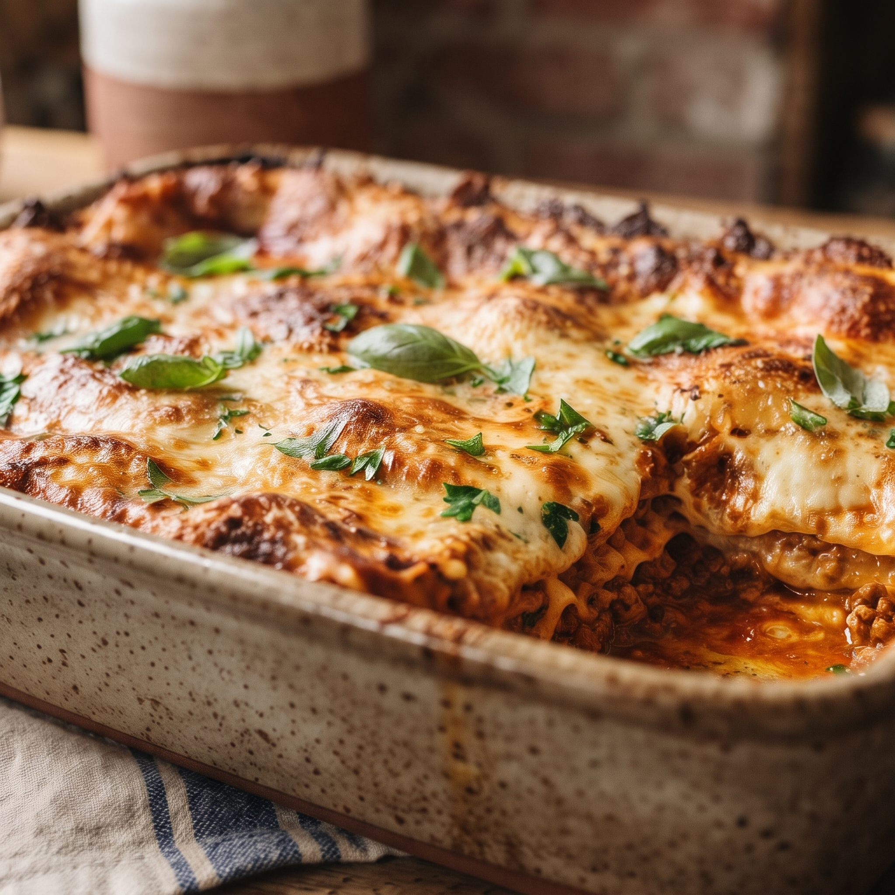

Lasagna

Description
Lasagna is a comforting and rich Italian classic made by layering wide, flat pasta sheets with a slow-simmered, savory ragù of ground meat and tomatoes, a creamy bechamel sauce, and plenty of melted cheeses like mozzarella, ricotta, and Parmesan. As it bakes in the oven, these distinct layers fuse into a bubbling, golden-brown dish with crisp edges and a warm, velvety center that offers a deeply satisfying blend of hearty, cheesy, and tangy flavors in every bite.
Ingredients
- 500 grams of mince
- 1 onion
- 1 garlic
- tin tomatoes
- lasagna sheets
- shredded cheese
Steps
- Chop the onions and dice garlic
- Put pan on medium heat and cook garlic until aromatic
- Brown mince and add tomatoes
- cook on low heat until it thinks
- while the sauce is cooking, boil lasagna sheets until just tender
- in baking tray add spoonful of mince, lasagna sheet and white sauce. Repeat until all ingredients are used.
- bake in 200 degrees oven for 20 minutes.
Home